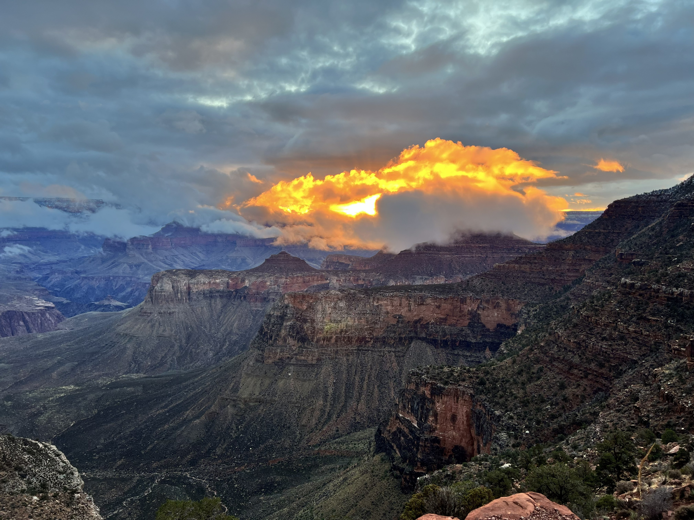

Grand Canyon Nation Park - South Kaibab Trail
The South Kaibab Trail is one of those hikes that stays with you long after you’ve left the canyon behind. From the moment you step onto the ridge, the views open up in every direction—towering walls, sweeping plateaus, and colors that shift with every change in the light. There’s no slow build‑up here; the canyon reveals itself immediately, and it’s breathtaking. The trail is steep and exposed, and you feel the effort right away, but that challenge is part of what makes the journey so memorable. Each section gives you a new perspective, from the dramatic drop-offs near Ooh Aah Point to the wide, panoramic views farther down. Skeleton Point, in particular, offers a moment where the canyon’s depth truly hits you. It’s the kind of place where you stop not because you’re tired, but because the view demands it. What makes the South Kaibab special is how connected you feel to the landscape. You’re not just looking at the Grand Canyon—you’re moving through its layers, watching the geology change beneath your feet and the walls rise around you. The sense of scale is humbling in the best way. Whether you turn around at a viewpoint or continue deeper, the South Kaibab delivers a once‑in‑a‑lifetime experience. The scenery is nonstop, the challenge is real, and the reward is a deeper appreciation for one of the most iconic landscapes on Earth.